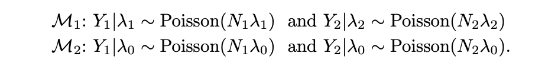

```{r}
#| output: hide
library(tidyverse)
library(ggplot2)
library(rjags)
library(posterior)
library(bayesplot)
library(gt)
theme_set(theme_classic())
```2
Download the airquality dataset in R. Fit the following model to the data
\[ \mathrm{ozone_i} \sim \mathrm{Normal}(\beta_1 + \beta_2\mathrm{solar.R_i} + \beta_3\mathrm{temp_i} + \beta_4\mathrm{wind_i}, \sigma^2) \]
Use posterior predictive checks to verify that the model fits well. If you find model misspecification, suggest (but do not fit) alternatives.
Solution:
4
Use the “Mr. October” data. Compare the two models:

using Bayes factors, DIC and WAIC. Assume the Uniform(0, c) prior for all \(\lambda_j\) and compare the results for \(c = 1\) and \(c = 10\).
Solution:
10
Download the WWWusage dataset in R. Using data from times \(t = 5, \dots, 100\) as outcomes, fit the autoregressive model
\[ Y_t \vert Y_{t-1}, \dots, Y_1 \sim \mathrm{Normal}(\beta_0 + \beta_1 Y_{t-1} + \dots + \beta_L Y_{t-L}, \sigma^2), \]
where \(Y_t\) is the WWW usage at time \(t\). Compare the models with \(L = 1, 2, 3, 4\) and select the best time lag L.
Solution: